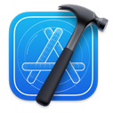

What’s new for Apple developers?
Learn about the key technologies and exciting capabilities available in the latest SDKs for iOS 16, iPadOS 16, macOS 13, tvOS 16 and watchOS 9, the toolkits you use to build apps for Apple platforms.

Xcode
Leverage the simplicity and power of Swift and SwiftUI with a new multiplatform app experience, code faster with enhanced editor features, and start testing and deploying from Xcode Cloud to TestFlight and the App Store.
SwiftUI
SwiftUI is the modern way to build great-looking user interfaces across all Apple platforms. You can learn it once and apply it everywhere. This year, SwiftUI is more powerful, flexible, and easier to adopt. Take control of your app’s navigation with a new stateful navigation API, build the layout that works best for your app with all-new custom layouts, and use SwiftUI more seamlessly in UIKit apps with new UICollectionView custom cell support.

Swift
This powerful programming language now features built-in support for regular expressions, all-new regex builders, and package plugins to create and share custom tooling. The latest updates also include improvements to generics syntax and under-the-hood performance improvements when building and launching apps.
WidgetKit
Now you can use WidgetKit to build complications for Apple Watch and widgets on the Lock Screen for iPhone, embracing SwiftUI and extending the glanceable experience. Write your code once for iOS 16 and watchOS 9, and share infrastructure with your existing Home Screen widgets.
In an update to iOS 16 later this year, you'll be able to create Live Activities with WidgetKit to help people stay on top of what’s happening in your app in real time, right from the Lock Screen. And with SwiftUI, you can animate your Live Activities from one state to the next.
App Intents
Help users quickly accomplish tasks related to your app by voice or tap. App Intents is a new Swift-only framework designed to make it faster and easier to build great actions — and you can use it to build new App Shortcuts. With no user setup required, App Shortcuts are available as soon as your app is installed in iOS, iPadOS, or watchOS and can be run from the Shortcuts app, Spotlight, and Siri. With support for parameters and synonyms, App Shortcuts let people interact with your app through Siri more naturally.
WeatherKit
Bring valuable weather information to your apps and services through a wide range of data that can help people stay up to date, safe, and prepared. It’s easy to use WeatherKit in your apps with a platform-specific Swift API, and on any other platform with a REST API.

Maps
Get the most out of the All-New Map, including the highly detailed 3D City Experience. Visualize data using overlays that seamlessly integrate with the 3D map. Create interactive, immersive experiences with the new Selectable Map Features and Look Around APIs. Use the new Maps Server API to increase performance, lower data usage, and improve battery life.
Metal 3
Metal powers hardware-accelerated graphics on Apple platforms by providing a low-overhead API, rich shading language, tight integration between graphics and compute, and an unparalleled suite of GPU profiling and debugging tools. Metal 3 introduces powerful features that help your games and pro apps tap into the full potential of Apple silicon. Now you can render high-resolution graphics in less time, load resources faster, train machine learning networks with the GPU, and more.
Augmented reality
ARKit 6
ARKit 6 introduces 4K video, so you can capture stunning, high-resolution videos of AR experiences — perfect for professional video editing, film production, social media apps, and more. Video and capture capabilities are expanded with support for HDR video and high-resolution background image capture. ARKit 6 also brings Location Anchors to new cities, such as Montreal, Sydney, Singapore, and Tokyo, and it features improvements to Motion Capture.
RoomPlan
Powered by ARKit, RoomPlan is a new Swift API that utilizes the camera and LiDAR Scanner on iPhone and iPad to create a 3D floor plan of a room, including key characteristics such as dimensions and types of furniture.
Machine learning
Core ML
Use Xcode 14 to analyze and optimize your Core-ML-powered features. Generate performance reports for Core ML models on your Mac or any connected iOS device without having to write any code. Review a summary of load and prediction times along with a breakdown of compute unit usage. Profile your app to view Core ML API calls and associated models using the Core ML template in Instruments. Combine information from the Core ML, Neural Engine, and GPU Instruments to track when and where models are executed on accelerated hardware. Aggregate timing data is summarized for each event, model, and submodel.
The Core ML framework now supports Float16 input and output feature types. This, combined with APIs for supplying your own output buffer backings for predictions, enables more control of how efficiently data flows in and out of your Core ML models. Support for sparse weight compression, restricting compute to the CPU and Neural Engine, and in-memory model instantiation are also now available.
Create ML app
Interactively learn about your model’s accuracy in the new evaluation UI in the Create ML app. Explore key metrics and their connections to specific examples to help identify challenging use cases and further investments in data collection to help improve model quality. Preview your model’s predictions on live video from your iPhone camera.
Create ML framework
Create ML is now available as a Swift framework on tvOS, along with iOS, iPadOS, and macOS. In addition to task-specific training APIs being available for many common model types, you can now define your own custom model and training pipelines by combining a rich set of ML building blocks with the new Create ML Components framework.
SharePlay
SharePlay lets people share experiences right inside FaceTime — and now via Messages. On iOS and iPadOS, apps that support SharePlay will even appear in FaceTime controls, making it easy for people to discover the shared experiences your app offers.
Shared with You
Use the new Shared with You framework and Collaboration API to bring your app’s collaboration experiences into Messages and FaceTime, and highlight content from your app that people shared in Messages in a new Shared with You section within your app.
Continuity Camera
On macOS 13, Continuity Camera lets people use iPhone as a camera for their Mac. This feature works automatically across all apps, and you can take it even further. New APIs power automatic camera input switching, provide access to the Desk View camera stream, and let you use AVCapture to access IPhone Camera features, such as flash mode, high-resolution capture, and photo quality prioritization.
Passkeys
Based on industry standards for account authentication, passkeys replace passwords with cryptographic key pairs, making them easier to use and far more secure. Adopt passkeys to give people a simple, secure way to sign in to your apps and websites across platforms — with no passwords required.
In-app purchase
Use new APIs and the latest enhancements to create even better in-app purchase experiences. You can now sync in-app purchase products from App Store Connect into Xcode, control when StoreKit message sheets appear in your app, present offer code redemption sheets within your app, and much more. Take advantage of new testing features, like the ability to request test notifications and test additional in-app purchase scenarios in the sandbox environment and Xcode, so you can be sure to provide great experiences for your users.
Wallet and Apple Pay
Securely verify a user’s age or identity in your apps by integrating with the new feature supporting driver’s licenses and state IDs in Apple Wallet. Detailed receipt and order tracking information for Apple Pay transactions now display in Wallet, so you can notify customers about order updates and provide easy access to customer service and order management options.
Apple Pay later lets customers split a purchase into four equal payments over six weeks, with no interest or fees to pay. And it’s built into Wallet so customers can easily track what they owe and when they owe it.
Payment apps can now accept contactless payments from contactless credit or debit cards, Apple Pay, Apple Watch, and smartphones with other digital wallets — right on iPhone and without any extra terminals or hardware.
New Apple Pay merchant tokens and transaction types in the Payment Request API let you fine-tune your automatic and recurring payment experiences. And you can offer the ability to specify purchase amounts for multiple merchants within a single Apple Pay payment sheet.
Read about what’s new in Wallet
Read about what’s new in Apple Pay
CarPlay
A smarter, safer way to use iPhone in the car, CarPlay lets people get directions, make calls, send and receive messages, and listen to music from their car’s built-in display, all while staying focused on the road. Now driving task apps can help people take care of essentials while behind the wheel. Fueling apps join EV charging apps as a complete way to handle fill-ups and keep you going on the road. Navigation apps can now display maps and turn-by-turn instructions in a second location, such as the instrument cluster located directly in front of the driver. And the new CarPlay Simulator helps you replicate a complete CarPlay environment, so you can develop your CarPlay app on Mac without leaving your desk.
Desktop-class iPad apps
Productivity improvements help you enable more powerful, complex workflows on iPad than ever before. Adopt new productivity features and enhancements to help people multitask, increase efficiency, customize their workflows, and more.
Mac Catalyst
The latest desktop-class features in iPadOS 16 translate beautifully onto macOS 13. Your Mac app’s toolbars are automatically optimized and document-based apps gain key features, such as menu items and the ability to rename the document in the toolbar. And you can use new Mac Catalyst APIs to enhance multiwindow behaviors, add custom views to your toolbars, and more.
Focus filter API
Now you can go even further in respecting Focus settings with Focus filters, which show users only what’s relevant to them within your app, based on the Focus they’ve chosen. And specific Focus settings aren’t exposed to apps, preserving privacy.
Game Center
Game Center, Apple’s social gaming network, lets you bring even more fun and connection to your games. Now players can find out what’s happening in your games and connect with friends around their activities.
Redesigned dashboard
Achievements and leaderboard standings are featured more prominently on the dashboard in your games, and the dashboard now includes a feed with friends’ in-game activity. Players can also see this activity on their Game Center profile, as well as friends’ profiles.
Push notifications
Players can receive push notifications about leaderboard activity — such as when someone passes their score — so they can stay on top of the latest activity in your game and remain engaged.
App Clips
App Clips can now be up to 15 MB and read data you store in a public CloudKit database. Secure items stored in the keychain can be automatically moved to your app when it’s installed. And you can automate your workflow to add and update App Clip experiences using the new App Clip Experiences web API.
Accessibility
Create accessible Single App Mode experiences, add accessibility to your Unity games, and discover techniques for building rich, accessible web apps.
ShazamKit
Bring audio recognition to your apps with ShazamKit. Now you can take advantage of tools to create signatures and assign and return timed metadata, so it’s easier than ever to build experiences synced to audio.
Live Text API
Now your app can grab text straight from photos and paused video frames. Enable text interactions, translation, data detection, and QR code scanning within any image view on iOS, iPadOS, or macOS.
tvOS enhancements
Cross-device connectivity
Integrate your tvOS app with your iOS, iPadOS, or watchOS app to unlock new experiences on Apple TV. For example, you can deliver more personalized workouts on Apple TV based on motion sensor data from Apple Watch, display real-time information on iPhone while media plays in your app on Apple TV, or include more screens for gameplay.
Multiuser support
Make it easier for people to enjoy your Apple TV app with improved system integration for user profiles. With credentials stored in a shared keychain, users won’t need to sign in and choose their profile every time they launch your app.
SwiftUI for tvOS
Customize your app’s interface and provide even more functionality with SwiftUI. Create custom button styles and effects that accent your design, take advantage of standard gestures, such as Tap and Touch, and add consistency to interactions with the Focus APIs.
Business and education
Sign in with Apple at Work & School
Provide a trusted, seamless, and secure authentication experience for users at school or in the workplace. Sign in with Apple at Work or School works in any app that supports Sign in with Apple, in iOS 16, iPadOS 16, and macOS 13.
Roster API
Use the Roster API to access user and class information in Apple School Manager.
Web Push in Safari
Send notifications to people who use your website or web app in Safari 16 on macOS even when Safari isn’t running. Fully interoperable, Web Push’s standards-based implementation relies on the Push API, Notification API, and Service Workers. If you’ve already coded Web Push using industry best practices, it will automatically work on Safari. And you don’t need to be an Apple Developer Program member.
Tools and documentation
Xcode
Download Xcode 14, which incudes the latest SDKs for iOS, iPadOS, macOS, tvOS, and watchOS.
Updated documentation
View a linked list of new and updated documentation.
What's new in developer documentation
Release notes
View detailed information on API changes in the latest released versions, including each beta release.